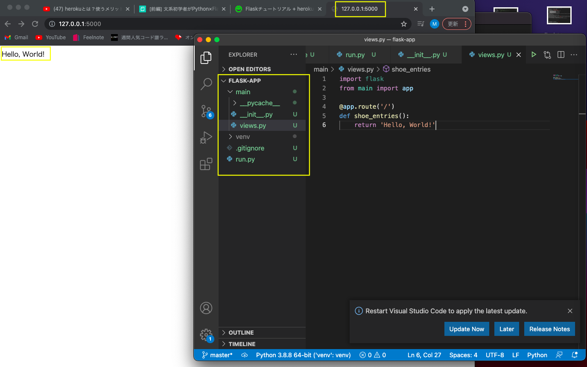
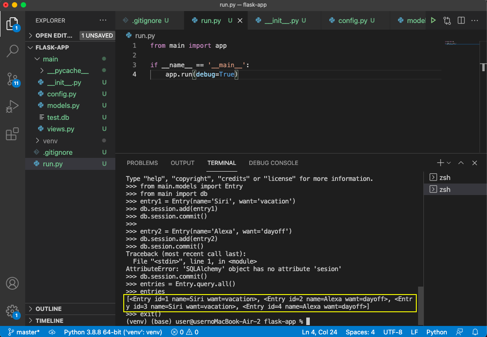
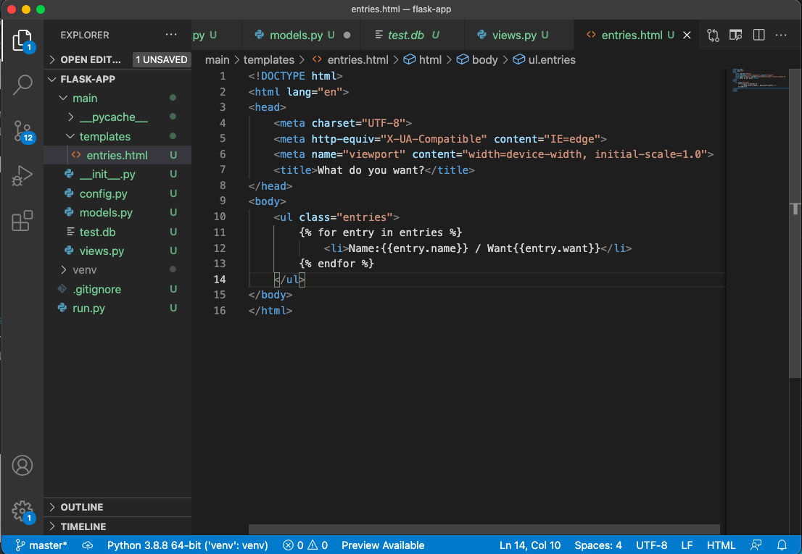
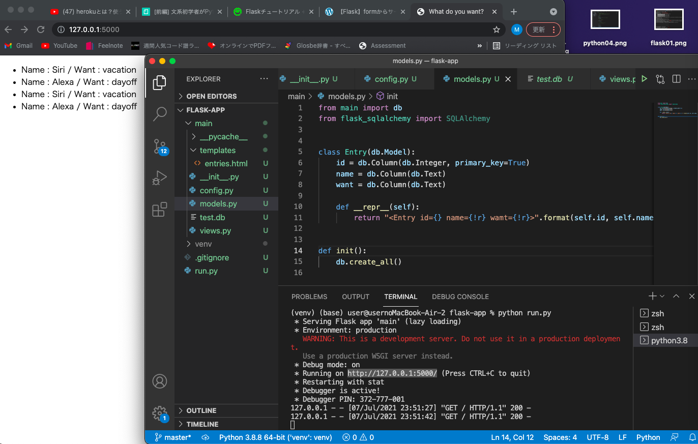
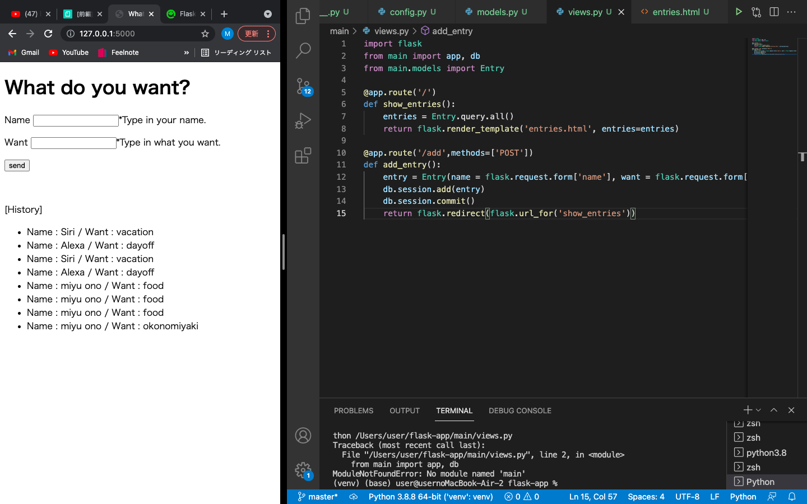

Flaskでデータベースを構築する
2021/07/08
①プロジェクトの作成
mkdir flask_app
cd flask_appgit init
git init
②python仮想環境 構築
python3 -m venv venv
source venv/bin/activate
activateすると (venv)$ の様な仮想空間が現れる。
venvのファイルと同じ階層に .gitignore を作り、それに venv と書き込む。
venvはgitで管理する必要はないためと書かれているが正直なぜなのかはよくわからない。
しかし、あとからエラーが出るのが怖いので一応やっておく。
③flaskのインストール
pip install --upgrade pip
pip install flask
④フォルダの作成
これにflaskの主要ファイルを置く。
mkdir main
ここからはいよいよ書き込み！
①run.py
Hello,World!と表示する。
venvのファイルと同じ階層に run.py を作る。
from main import app
if__name__ = '__main__':
app.run(debug=True)
②main/__init.py__
mainのフォルダの中に __init.py__ を作る
from flask import Flask
app = Flask(__name__)
import main.views
この時、エラーで文字の下に波線が出てしまうが、
あとから mian package がimportされた時になくなるので
気にせず進む。
③mian/views.py
mainのフォルダの中にviews.pyを作る
import flask
from main import app
@app.route('/')
def show_entries():
return 'Hello, World'
④実行
ターミナルで実行する
python run.py
ターミナル上にブラウザのpassが表示されるのでそこにいくと、
Hello, World!と表示されている。
ここまでの画面がこちら↓
ディレクトリの構成も確認してください！

データベースを使用するので
①flask_aqlalchemyのインストール
SQLAlchemy という ORM を使用する。
flask用のものをインストール。
pip install flask_sqlalchemy
②main/__init__.py を編集
from flask import Flask
from flask_sqlalchemy import SQLAlchemy
app = Flask(__name__)
app.config.from_object('main.config')
db = SQLAlchemy(app)
import main.views
③main/config.py を編集
import os
SQLALCHEMY_DATABASE_URI = os.environ.get('DATABASE_URL') or "sqlite:///test.db"
SQLALCHEMY_TRACK_MODIFICATIONS = True
SECRET_KEY="secret key"
④main/models/py を編集
私が作るWebアプリは人が欲しいもの記入するものが必要なので、
name:名前を入力する
want:欲しいものを入力する
を入れられるようにする。
from main import db
from flask_sqlalchemy import SQLAlchemy
class Entry(db.Model):
id = db.Colum(db.Integer, primary)
name = db.Colum(db.Text)
want = db.Colum(db.Text)
def __repr__(self):
return "" .format(self.id, self.name)
def init():
db.create_all()
⑤データベース作成
python -c "import main.models; main.models.init()"
⑥データ挿入
データ挿入
2人分のデータを入れる。
name:Siri want:vacation
name:Alexa want:dayoff
(venv)$ python
>>> from main.models import Entry
>>> from main import db
>>> entry1 = Entry(name='Siri', want='vacation')
>>> db.session.add(entry1)
>>> db.session.commit()
>>> entry2 = Entry(name='Alexa', want='dayoff')
>>>db.session.add(entry2)
>>>db.session.commit()
>>> entries = Entry.query.all()
>>> entries
python コマンドでターミナルを「インタラクティブシェル」モードにする。
データ挿入のターミナル結果↓
ディレクトリ構成も確認してください!

最後の exit() はインタラクティブシェルモードを終了する。control+D でもできる。
⑦main/views.pyを編集
import flask
from main import app
from main.models import Entry
@app.route('/')
def show_entries():
entries = Entry.query.all()
return flask.render.render_template('entries.html', entries = entries)
⑧htmlテンプレートの準備
mkdir main/templates
tempaltesに entries.html ファイルを作成し、以下のように書き込む。

⑨実行
ターミナルで実行する。
python run.py
ローカルで実行して、ブラウザで確認するとこの様になる↓

⑩main/views.py を編集
ブラウザからデータベースに書き込む仕掛けを作る
from flask
from main import app, db
from main.models import Entry
@app.route('/')
def show_entries():
entries = Entry.query.all()
return flask.render_template('entries.html',entries=entries)
@app.route('/add', methods=['POST'])
def add_entry():
entry = Entry(name = flask.request.form['name'], want = flask.request.form['want'])
db.session.add(entry)
db.session.commit()
return flask.redirect(flask.url_for('show_entries'))
python run.pyで実行
ブラウザをチェックする！
実際に入力フォームからデータを送信する。

次は、このローカル環境をネットとつなげる！